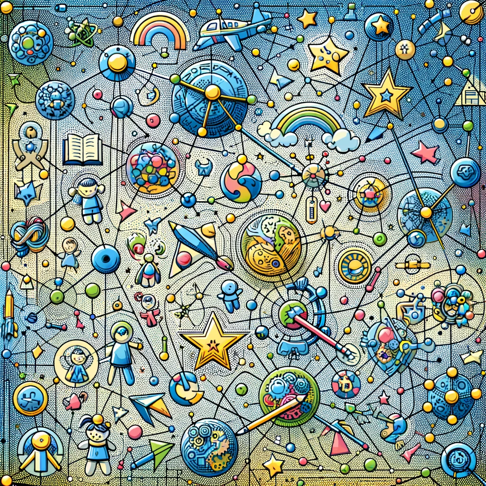
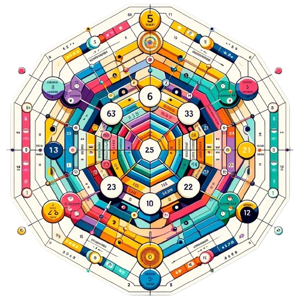

Онлайн расчет Матрицы Судьбы с подробной расшифровкой
Получите расчет вашей Матрицы Судьбы! Узнайте совместимость, детскую, финансовую матрицу и матрицу личного бренда с полной автоматической расшифровкой и рекомендациями от психолога. Улучшите свою жизнь, работая с энергиями вашей матрицы.
Матрица Судьбы:
Это уникальная методика, которая позволяет глубже понять свое предназначение, внутренние ресурсы и возможности. С ее помощью можно осознать свои сильные и слабые стороны, а также найти оптимальные пути для достижения личных целей и гармонии в жизни.
Финансовая Матрица:
Предназначена для анализа ваших финансовых возможностей и потенциала. Она помогает определить наиболее выгодные направления для инвестиций, понять, как лучше управлять своими денежными потоками и добиться финансовой стабильности и независимости.
Матрица Совместимость:
Помогает определить уровень гармонии и понимания между партнерами. С ее помощью можно выяснить, какие аспекты отношений требуют внимания и улучшения, а также найти пути для укрепления взаимопонимания и любви в паре.
Детская Матрица:
Помогает родителям лучше понять потенциал и способности своего ребенка. Она раскрывает особенности характера, склонности и таланты, что позволяет создать оптимальные условия для развития и воспитания, а также поддержать ребенка на его жизненном пути.

Карьерная Матрица:
Карьерная Матрица помогает выявить ваши профессиональные сильные и слабые стороны, а также определить оптимальные пути карьерного роста. С ее помощью можно понять, какие навыки нужно развивать для достижения успеха в выбранной профессии.
Здоровье и Благополучие:
Матрица Здоровья и Благополучия помогает понять, как энергетика вашего тела и ума влияет на общее самочувствие. Она предлагает советы по улучшению физического и психического здоровья через анализ ваших личных энергий.
Почему важно знать свою Матрицу судьбы?

- Матрица судьбы расскажет о ваших сильных сторонах, о предназначении и талантах, через что к вам приходят деньги
- Узнав свою Матрицу, поймете, где появляются трудности и почему не получается изменить свою жизнь в лучшую сторону
- Поймете, что надо делать, чтобы наладить отношения с собой, детьми, родителями, партнерами
- Сможете лучше понимать своих близких
- С помощью калькулятора совместимости узнаете как наладить отношения со своей второй половинкой и вдохнуть в вашу жизнь новые эмоции